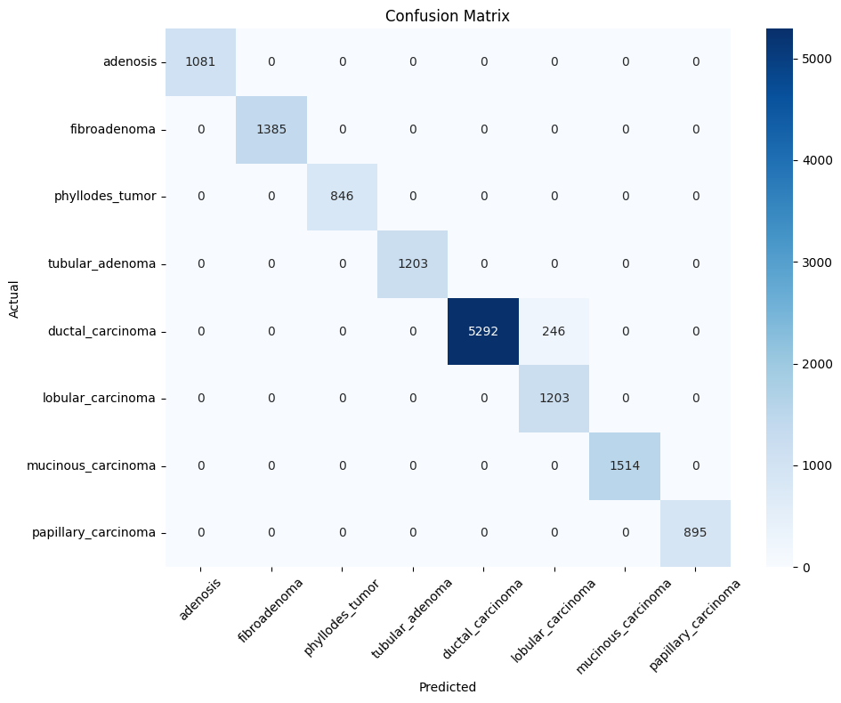
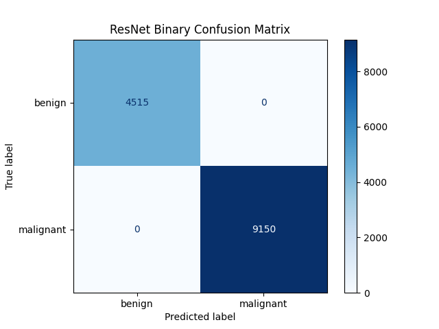
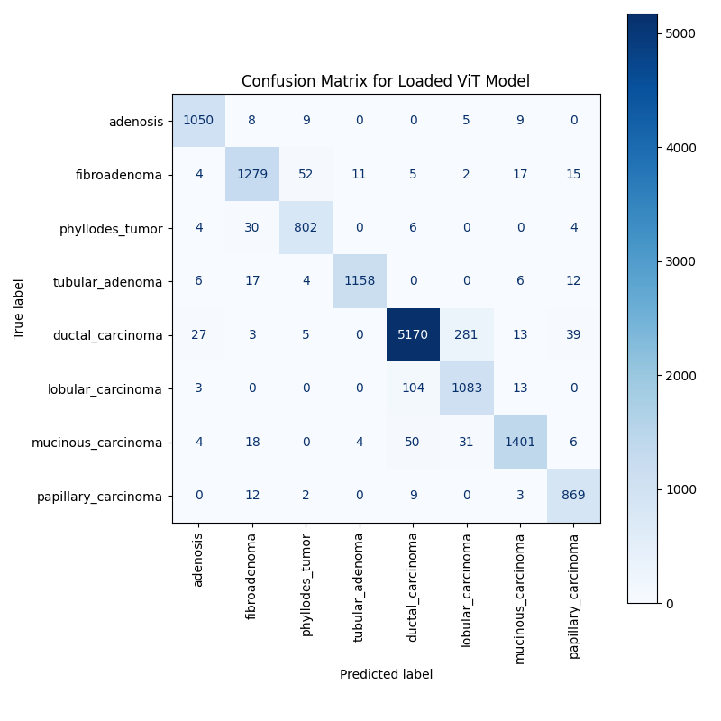
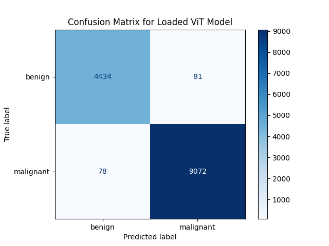
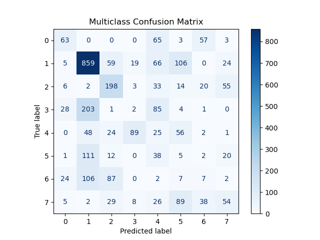

Utilizing Machines to Identify Benign and Malignant Cells in Microscopic Images
a DS3 project, conducted by Shamita Goyal, Hannah Huang, Ryan Estanislao, and Nicolas Toon
A microscopic image of a malignant breast tumor (papillary carcinoma) under 400X magnification.
Abstract
With the rise of new technology in today's world, one of the goals of developing artificial
intelligence is to aide medical professionals in making diagnosis. One of the biggest areas
where artificial intelligence is being utilized is identifying cancerous cells.
In this project, we utilized the Breast Cancer Histopathological Database (BreakHis),
a labeled dataset of breast tumor images taken under a microscope. The goal
of our project was to engineer a computer vision model that could analyze patterns
in the given images. With its pattern recognition, our model can accurately
determine whether a tumor was malignant, as well as the type of tumor.
This project showcases the development of a machine learning pipeline that can
identify benign and malignant breast cells.
Background
Breast cancer is the most common cancer for women all around the world. It is
estimated that 1 in 8 women will develop breast cancer in their lifetime. While some types of tumors are benign, such as adenosis, fibroadenoma, phyllodes tumor, and tubular
adenoma tumors, others are malignant and must be treated imminently, including carcinoma, lobular carcinoma,
mucinous carcinoma, and papillary carcinoma. Detecting
the cancer cells early is crucial for improving the health of cancer patients before
it is too late. However, traditional methods like human examinations of histopathological
images are inefficient and subject to human error. These false positives and false
negatives may have an extremely negative impact on the lives of some women. As a result,
with the advancements of technology that came with time, machine learning models have
shown promise in being able to automate the process of classifying cancer cells in medical images.
Question
To the untrained human eye, images of breast tumor cells are indifferentiable,
but a machine learning model undoubtedly can. To what extent can a trained
model identify types of breast tumors?
Project Focus
In this project, we aim to leverage machine learning to be able to assist cancer specialists
in identifying different cancer cells given microscopic images. By training our models to recognise
the different cell types, we hope to be able to help the medical field expand its use of AI assisted
diagnostics and make even greater contributions in medicine.
We focused on testing differently structured models to identify certain types of breast cancer tumors in a given tissue sample.
We chose three models to test out: a convolutional neural network (CNN), a CNN structured as a U-Net, and a vision transformer.
About the Models
Computer Vision
A visual representation of ResNet's structure [image credit]
Computer vision is a broad, umbrella term that many models fall under. However, in this project, we used ResNet, a pretrained convolutional neural network, provided
by Torchvision. ResNet was built in 2015 for the purposes of image recognition, and will essentially serve as our goal for this project.
Read the Jupyter Notebook to learn more!
Vision Transformer
A visual representation of the architecture of a vision transformer [image credit]
Vision transformers use a tokenization pipeline to process images. Similar to how large language models like ChatGPT use tokens to parse through words,
vision transformers tokenize patches of the image and treat them like tokens, decipher patterns and relationships between varying patches. Originally, they were designed
as alternatives to convolutional neural networks, and are now seen to have higher ceilings than convolutional neural networks, with the drawback of data inefficiency.
Vision transformers require large amounts of data to be accurate and are computationally expensive.
Read the Jupyter Notebook to learn more!
U-Net
 A visual representation of the U-Net's u-shape structure [image credit]
A visual representation of the U-Net's u-shape structure [image credit]
U-Nets is another form of convolutional neural network, but employs a specific structure to improve performance. As in the name, U-Nets are structured in a u-shape,
due to the connections linking convolutional layers opposite of each other, while still being connected with adjacent layers. U-Nets are very widely used in
image generation models, such as DALL-E, Stable Diffusion, and Midjourney, although it was originally created for biomedical image segmentation tasks similar to this project.
Read the Jupyter Notebook to learn more!
Methodologies
BreakHis Dataset
The BreakHis dataset[1] contains 9109 images of breast tumor tissue that comes from 82 patients. Each image
is magnified by either 40x, 100x, 200x, or 400x. Each image is a 700X460 pixel, RGB, 8-bit depth, PNG image.
Additionally, images are separated into multiple types of benign and malignant tumors, with 2,480 benign
and 5,429 malignant images. The types of benign tumors are adenosis (A), fibroadenoma (F), phyllodes
tumor (PT), and tubular adenoma (TA), and the types of malignant tumors are carcinoma (DC), lobular
carcinoma (LC), mucinous carcinoma (MC), and papillary carcinoma (PC). The dataset collected samples for
imaging through partial mastectomy or excisional biopsy.
Data Preprocessing and Transformations
We started by parsing the CSV file and generating image-label pairs that were then loaded into eight separate classes based on different factors. Each of the tumor
subtypes were assigned an integer class value 0 through 7. The eight different classes were then split into two general categories:
benign and malignant cells. Binary labels were created for the categorical benign and malignant cells.
During preprocessing and transformation, we resized the images to be a standard amount of pixels. We then applied PyTorch transformations in order to convert each
image to a tensor and then normalized them using ImageNet statistics in order to ensure compatibility with our PyTorch models.
Training, Optimization, and Testing
All the models were trained, optimized, and tested in similar fashions. The models were then moved to the GPU in order to speed up the training process when available.
The ResNet and U-Net models were trained over 30 epochs total, while the Vision Transformer was trained using 200 epochs. All the models used the Adam optimizer
(with learning rate 0.0001) and cross-entropy loss for multi-class classification. While training each epoch, we ensured
to track both loss and accuracy on the training and validation dataset. To prevent overfitting, we included a learning rate scheduler
that reduced the learning rate whenever the validation loss was barely changing. We also incorporated early stopping in order to stop
the model from training when there was no improvement happening. After training, the model was evaluated using two different confusion
matrices: the 8 class matrix and the binary matrix.
Results
After training, optimizing, and testing the three models, we created the same confusion matrices to compare performance. To compare performance,
we relied on confusion matrices, which allowed us to calcuate an important metric: recall.
Mathematically, recall is the number of true positive predictions that your model made, divided by the total number of inputs that were actually positive.
In the context of our project (and real world breast tumors), a high recall represents our model saying "yes, this tumor is malignant" when it actually is, while a low
recall represents our model saying "no, this tumor is not malignant", when in reality, the tumor is malignant!
ResNet
The ResNet model outperformed all of the other models, with near-perfect accuracy for classification and 100% recall and precision. Its confusion matrices for the testing set can be seen below:


Vision Transformer
The vision transformer also did pretty well, with near-perfect accuracy as well, with ~99.1% for both recall and precision. Its confusion matrices can be found below:


U-Net
On the other hand, the U-Net model performed significantly worse compared to the ResNet model and vision transformer, with only ~41.8% multiclass accuracy (~81.4% binary accuracy). However, its recall and precision were fairly good, with ~82.7% precision and ~90.2% recall. Its confusion matrices can be found below:


Conclusion
After analysis, the ResNet model did the best, followed by the vision transformer, and then the U-Net model. We believe that the ResNet model is the best overall model
to use for such tumor classification, as it does not consume much time or resources to achieve great results.
The vision transformer also did well in our research, but ultimately ended up taking far too long to train compared to the ResNet model, with no visible improvement in classification testing results.
The U-Net also fell very short to our expectations. Going into this project, we believed that because a U-Net model is good at image segmentation, it would
have the abilities to classify the segments that it found in images. However, this was not the case. The typical U-Net structure strengths lie in the image segmentation,
and in our project, we had to modify the model to produce classification outputs. However, our implementation fell short of expectations.
In the future, we would like to experiment further with modified U-Net models that are able to accurately segment and classify microscopic tumors. It would
be super beneficial to create a singular model that has the ability to segment out tumors and classify it at the same time.
Overall, this project demonstrates research comparing the performance of different types of machine learning models to achieve the same task. The results highlight that
the ResNet-18 model is a great option for such image classification tasks, while other machine learning models may have the same aspects, but fall short in other areas.
Acknowledgements
[1] Spanhol, F., Oliveira, L. S., Petitjean, C., Heutte, L., A Dataset for Breast Cancer Histopathological Image Classification, IEEE Transactions on Biomedical Engineering (TBME), 63(7):1455-1462, 2016.
We would like to thank the authors of the BreakHis dataset for making their work public for anyone to freely use and analyze.
Their paper can be found here.
We would also like to thank DS3 @ UCSD for giving us guidance throughout the project!